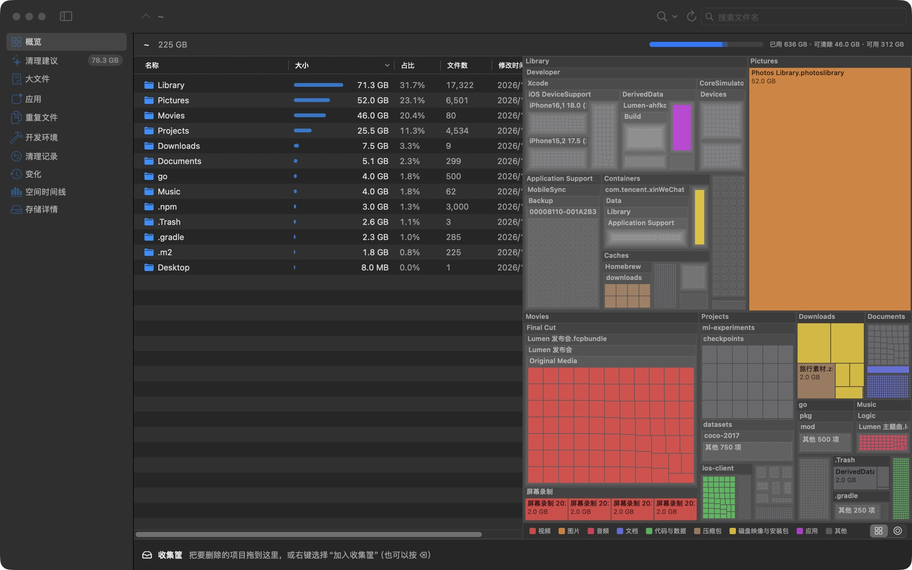
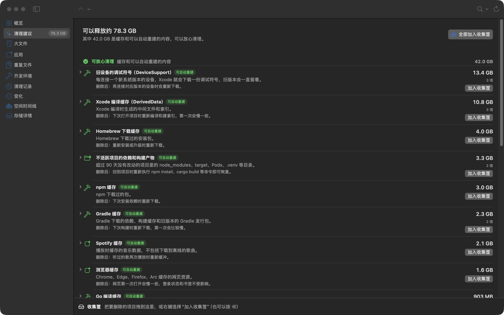
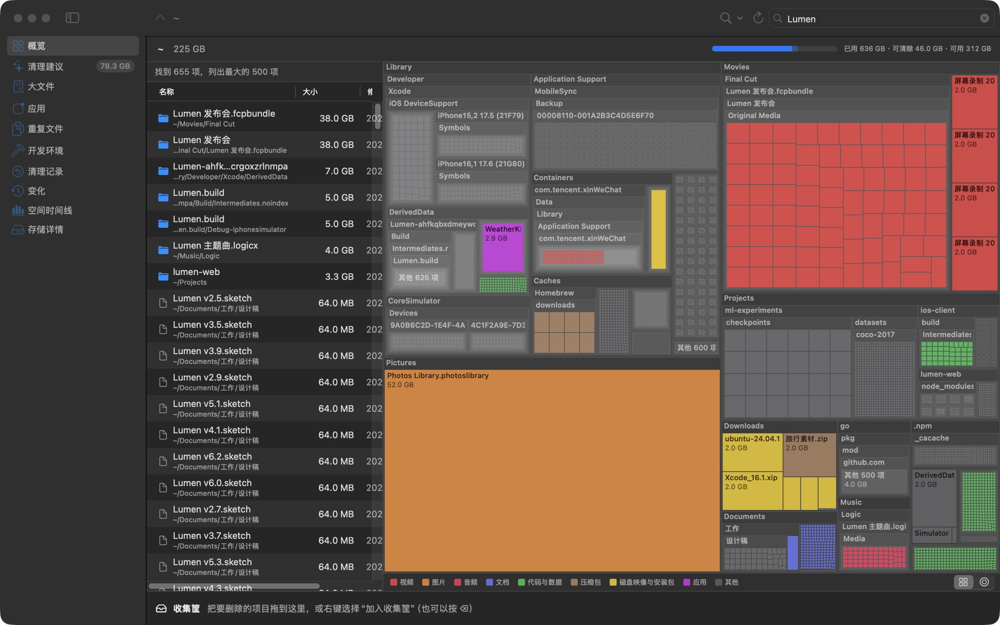
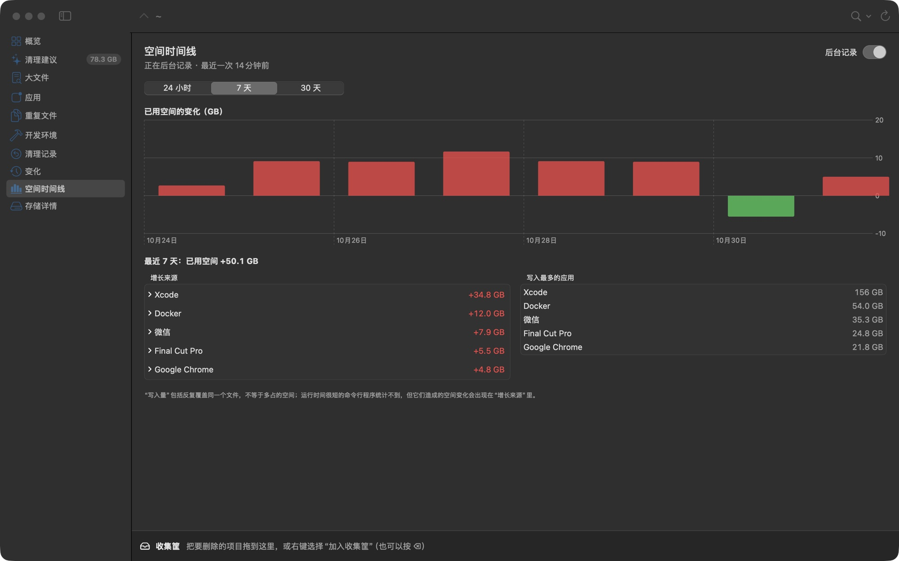
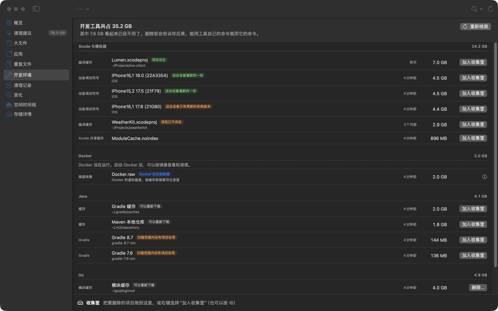
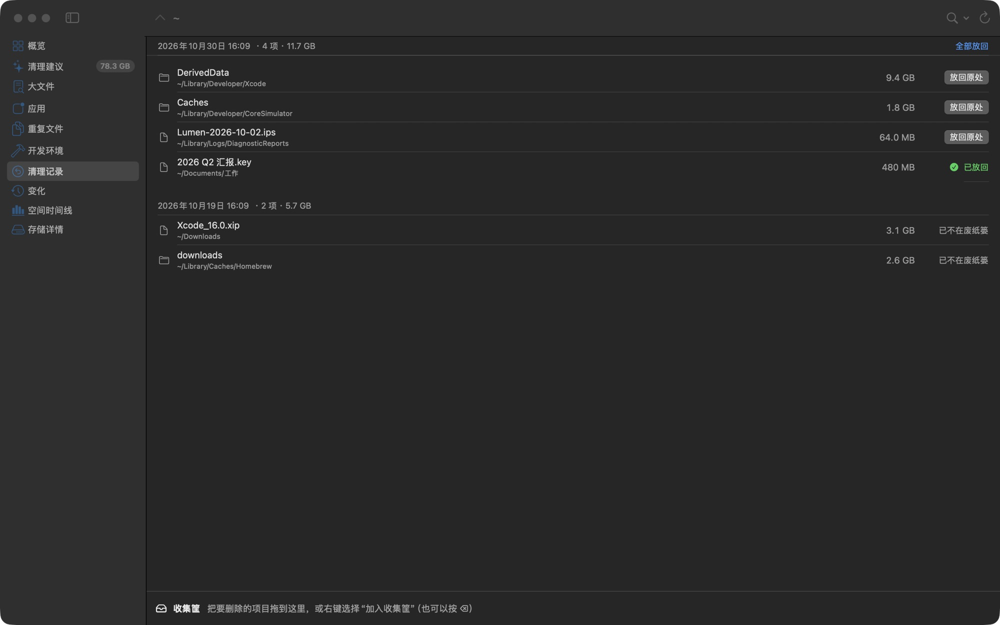
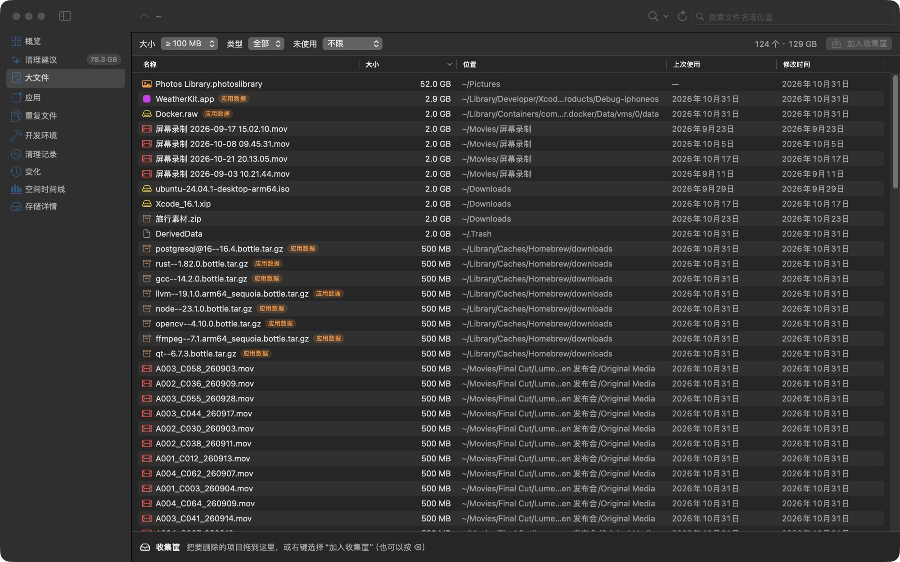

DiskLens · 磁盘空间分析
看清每一 GB
的去向。
原生速度扫完整块磁盘，把空间画成一张可以放大的地图，再告诉你哪些能放心删掉、删了会怎样。
速度
喝一口咖啡的工夫，
整个文件夹已经看完。
DiskLens 一次批量读取整个目录的属性，几十个线程同时向下走。扫描结果会保存下来，下次打开只更新变过的文件夹。
扫完一个有 160 万个文件的个人文件夹
再次打开时，只重扫变化过的文件夹
和终端里 du 的结果相差不到这么多
后台记录写入活动时的占用
批量读取目录
用 getattrlistbulk 一次拿到一整个目录的大小和类型，不必逐个文件询问系统。
算的是真实占用
按磁盘上实际分配的空间统计，硬链接只算一次，不会跨到其他磁盘上去。
只更新变化
借助 FSEvents 记下哪些文件夹变过，下次打开时直接从上次的结果接着更新。
方块图与环形图
同一块磁盘，
换个角度看得更清楚。
方块图里面积就是大小，最大的东西一眼就能看到；环形图一圈圈往外展开，文件夹的层级关系更直观。点一下切换，双击任何文件夹就放大进去。

智能清理建议
不只告诉你能删什么，
还告诉你删了会怎样。
48 条清理规则覆盖开发工具、浏览器、聊天应用和系统缓存，再加上对三个月没动过的项目、已卸载应用残留的判断。规则会在线更新，并且带有签名。

文件名搜索
几百万个文件里，
打几个字就找到。
搜索整次扫描的所有文件和文件夹，按大小从大到小排好。选中一项，右边的图立刻跳到它所在的位置。

空间时间线
空间突然少了，
知道是谁、哪天写的。
后台的小助手每 10 秒记录一次各个应用写了多少数据，再把增长的文件夹归到对应的应用。按天排开，哪一天出了状况一眼就能看出来。

开发环境
Xcode、Docker、Gradle，
哪些还在用，一目了然。
开发工具往往是 Mac 上最大的隐形占用。DiskLens 找出装了哪些版本、模拟器、镜像和缓存，标出哪些正在用、哪些已经没人用，再用工具自己的命令把它们删掉。

清理记录
删错了？
放回去就好。
每次清理都会记下每一项原来在哪、进了废纸篓的哪里。清空废纸篓之前，点一下就能放回原处。

还有更多
每一个角落，都替你看过。

应用卸载
把应用拖进废纸篓，DiskLens 会把它留在资源库里的缓存、设置和数据一起列出来。同一家公司的其他应用不会被牵连。
重复文件
先比大小，再比头尾，最后逐字节核对。APFS 克隆出来的副本不占额外空间，不会被误报。
变化对比
和上一次扫描相比，哪些文件夹长了、哪些变小了，按变化大小排好。
存储详情
「系统数据」到底是什么：系统卷、本地快照、可清除空间，分开讲清楚。
菜单栏
菜单栏里一个安静的图标，点开就看到可用空间；快满了、或者一小时内突然多用了很多时，发通知提醒你。
自动更新
有新版本时提醒你，一键下载安装。安装包先校验签名再替换，旧版本移到废纸篓。
你的磁盘，
只有你看得到。
扫描结果、写入记录和清理历史都存在你自己的 Mac 上。DiskLens 不上传文件名，不收集使用数据，也不需要账号。
DiskLens
预览版已发布。
支持 macOS 14 Sonoma 及以上，Apple 芯片和 Intel 机型都能用。预览版还没有经过苹果公证，第一次打开时请按住 Control 点按 DiskLens，选「打开」。